Analiza rješenja · JOI Spring Camp 2021 · Dan 2
Plan izgradnje cesta
O ovom članku
Tekst je prijevod službene japanske prezentacije rješenja, preoblikovan u članak. Slajdovi su ugrađeni kao slike; natpis pod svakim slajdom je prijevod teksta na njemu. Dijelovi označeni kao trenerska napomena nisu u izvornoj prezentaciji — dodani su da popune korake koje slajdovi preskaču ili samo skiciraju.
Slajdovi
Zadatak
izvorni slajdovi 1–2
-
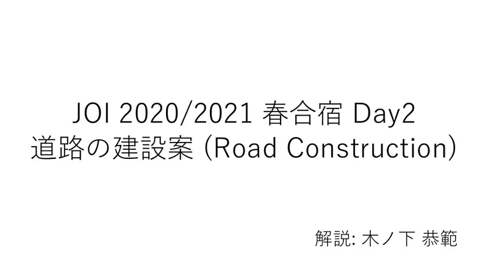
1Naslovni slajd: Road Construction; analiza: Kinoshita Yasunori. -
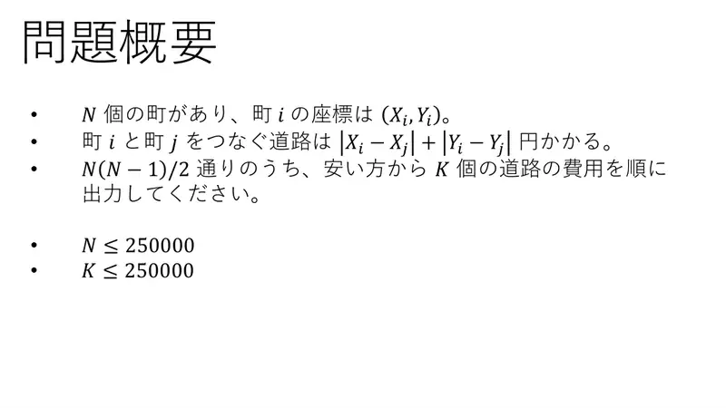
2Sažetak. $N$ gradova s koordinatama; cesta $i$–$j$ košta $|X_i - X_j| + |Y_i - Y_j|$. Od $N(N-1)/2$ parova ispiši $K$ najjeftinijih cijena. $N, K \le 250\,000$.
← → tipke ili klik na sliku
Podzadaci 1–3 18 bodova
Koraci algoritma
Grubo, 1D i K = 1
izvorni slajdovi 3–8
-
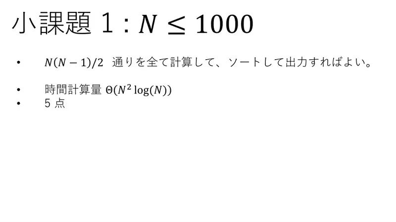
3Podzadatak 1 ($N \le 1000$): izračunaj sve parove i sortiraj, $\Theta(N^2\log N)$. 5 bodova. -
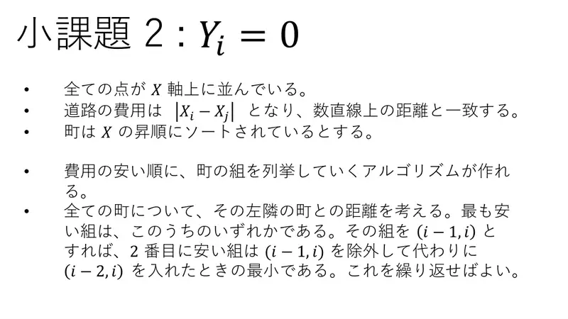
4Podzadatak 2 ($Y_i = 0$): sve točke na brojevnom pravcu, cijena $|X_i - X_j|$. Sortiraj po $X$. Najjeftiniji par je neki susjedni $(i-1, i)$; nakon što ga izvadimo, zamijenimo ga s $(i-2, i)$ i ponovno uzmemo minimum. -
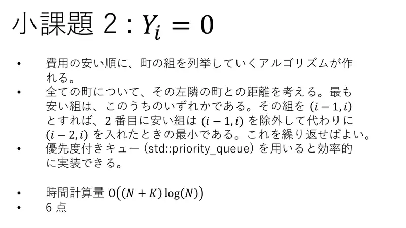
5Prioritetni red ( std::priority_queue) daje $O(N + K\log N)$. 6 bodova. -
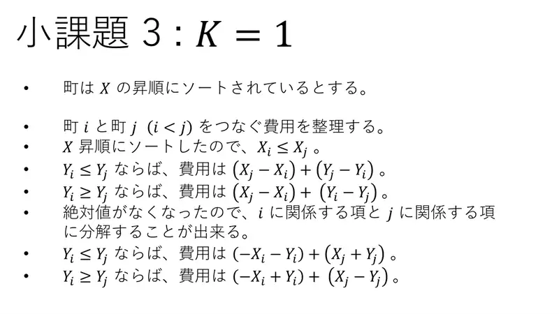
6Podzadatak 3 ($K = 1$): sortiraj po $X$, pa $X_i \le X_j$ za $i < j$. Ako $Y_i \le Y_j$: cijena $= X_j - X_i + Y_j - Y_i = (-X_i - Y_i) + (X_j + Y_j)$. Ako $Y_i \ge Y_j$: cijena $= (-X_i + Y_i) + (X_j - Y_j)$. Apsolutne vrijednosti nestaju, članovi se razdvajaju po $i$ i $j$. -
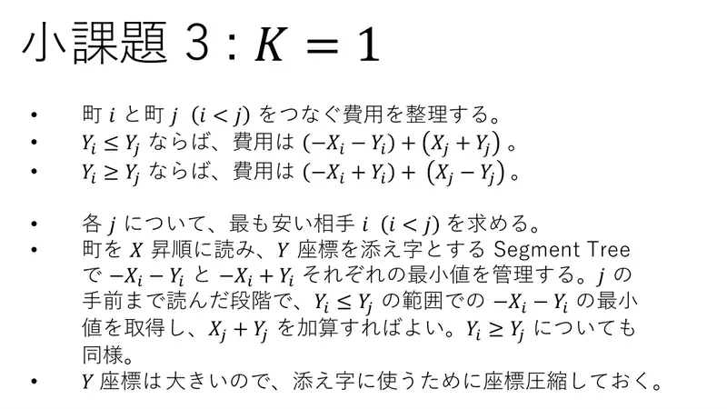
7Za svaki $j$ nađi najjeftinijeg partnera $i < j$: čitaj po $X$, drži segmentna stabla indeksirana s $Y$ za minimume $-X_i - Y_i$ i $-X_i + Y_i$; upitaj minimum na $Y_i \le Y_j$ i dodaj $X_j + Y_j$ (analogno za $Y_i \ge Y_j$). -
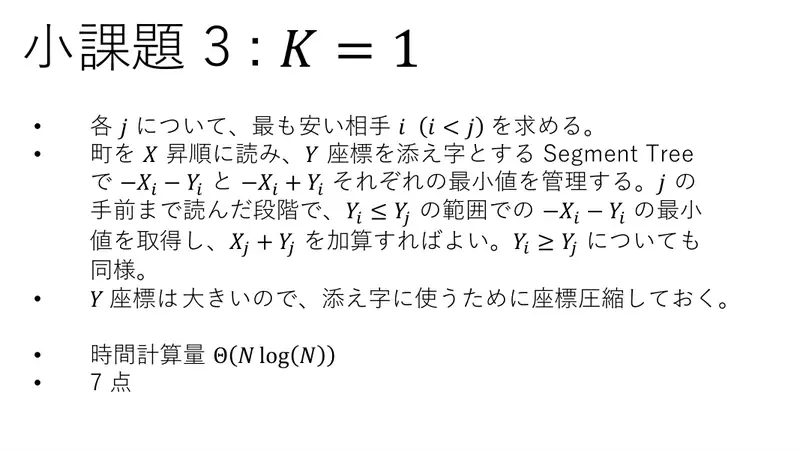
8Koordinate su velike — komprimiraj $Y$. $\Theta(N\log N)$, 7 bodova.
← → tipke ili klik na sliku
Podzadatak 4: $K \le 10$ 20 bodova
Koraci algoritma
Ukloni najjeftiniji par
izvorni slajdovi 9–10
-
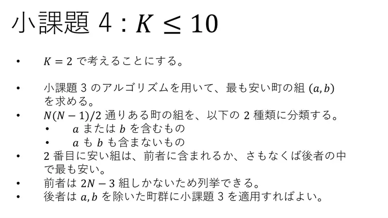
9$K = 2$: nađi najjeftiniji par $(a, b)$ algoritmom podzadatka 3. Parove podijeli na one koji sadrže $a$ ili $b$ (samo $2N - 3$ — nabroji ih) i one koji ne sadrže ni jedan (ponovi podzadatak 3 na gradovima bez $a, b$). Drugi najjeftiniji par je u prvoj skupini ili je najjeftiniji u drugoj. -
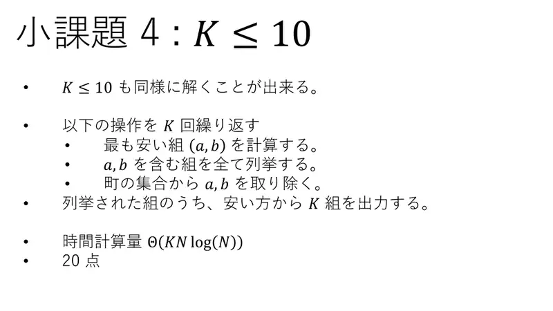
10Za $K \le 10$ ponovi $K$ puta: nađi najjeftiniji par $(a,b)$, nabroji sve parove koji ga dodiruju, ukloni $a, b$. Na kraju od nabrojanih ispiši $K$ najjeftinijih. $\Theta(KN\log N)$, 20 bodova.
← → tipke ili klik na sliku
Podzadatak 5: $N \le 10^5$ 27 bodova
Koraci algoritma
Binarno pretraživanje po cijeni
izvorni slajdovi 11–15
-
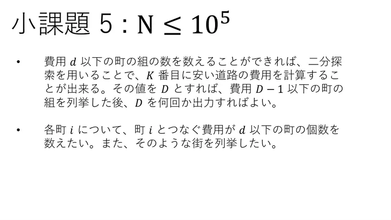
11Ako znamo prebrojati parove s cijenom $\le d$, binarnim pretraživanjem nađemo $K$-tu najjeftiniju cijenu $D$. Nabrojimo parove cijene $\le D - 1$ i dopunimo s $D$ potreban broj puta. Treba: za grad $i$ prebrojati/nabrojati gradove s cijenom $\le d$. -
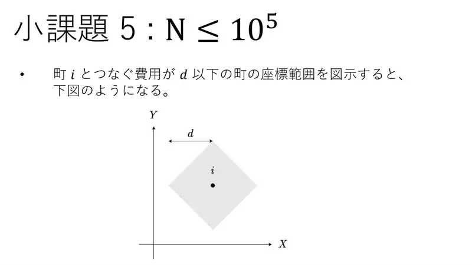
12Slika: područje „cijena do $i$ je $\le d$” je romb (kvadrat zarotiran za 45°) oko grada $i$. -
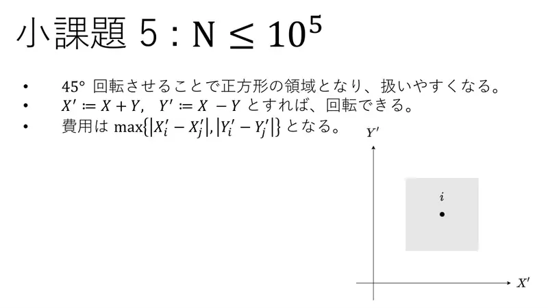
13Rotacija za 45°: $X' = X + Y$, $Y' = X - Y$; cijena postaje $\max(|X'_i - X'_j|, |Y'_i - Y'_j|)$, a romb postaje kvadrat poravnat s osima. -
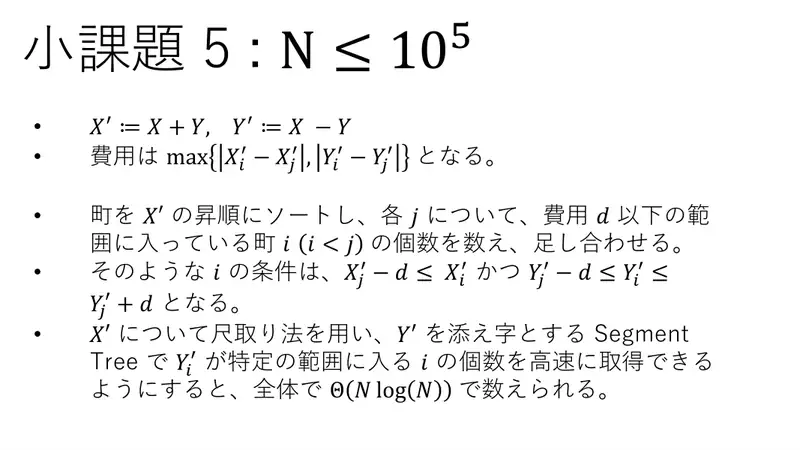
14Sortiraj po $X'$; za svaki $j$ broji $i < j$ s $X'_j - d \le X'_i$ i $Y'_j - d \le Y'_i \le Y'_j + d$. Dva pokazivača po $X'$ + segmentno stablo po $Y'$ (broj točaka u rasponu): $\Theta(N\log N)$ po $d$. -
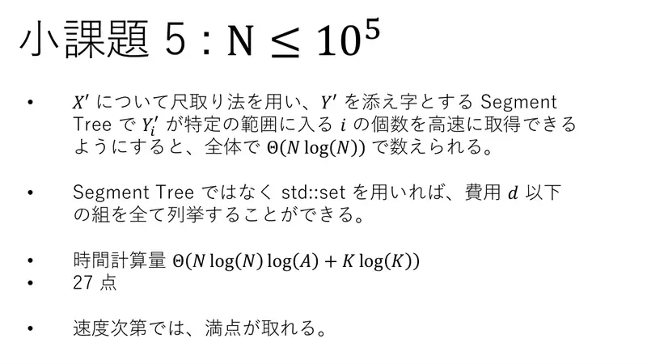
15Sa std::setumjesto stabla možeš i nabrojati sve parove cijene $\le d$. Ukupno $\Theta(N\log N\log A + K\log K)$: 27 bodova, a s brzom implementacijom i 100.
← → tipke ili klik na sliku
Puni bodovi 35 bodova
Koraci algoritma
Perzistentno segmentno stablo
izvorni slajdovi 16–21
-
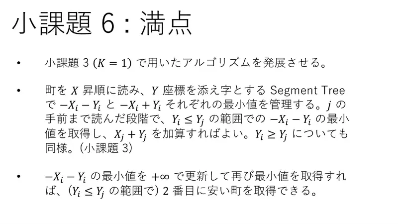
16Nadogradi podzadatak 3: čitaj po $X$, u segmentnim stablima po $Y$ drži minimume $-X_i - Y_i$ i $-X_i + Y_i$; za $j$ upitaj minimum na $Y_i \le Y_j$ i dodaj $X_j + Y_j$ (analogno druga klasa). -
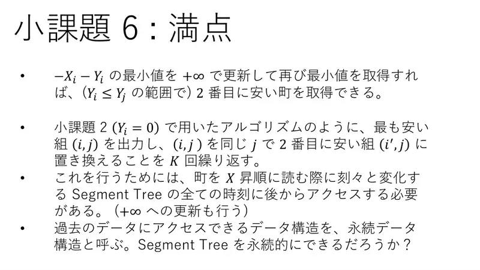
17Ako minimum zamijenimo s $+\infty$ i upitamo ponovno, dobijemo 2. najjeftinijeg partnera (u istoj klasi). Kao u podzadatku 2: izvadi najjeftiniji par $(i, j)$, zamijeni ga s $(i', j)$ — 2. najjeftinijim za isti $j$ — i ponovi $K$ puta. Za to moramo naknadno pristupati stanju stabla „u trenutku $j$” — i u njemu raditi ažuriranja na $+\infty$. Strukture koje pamte prošla stanja zovemo perzistentnima. -
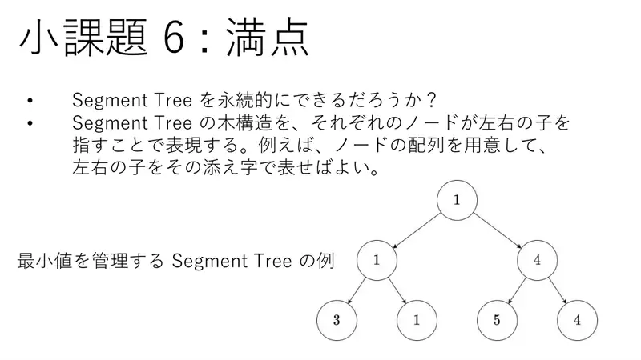
18Segmentno stablo predstavimo čvorovima koji pokazuju na lijevo i desno dijete (npr. niz čvorova, djeca kao indeksi). Slika: min-segmentno stablo. -
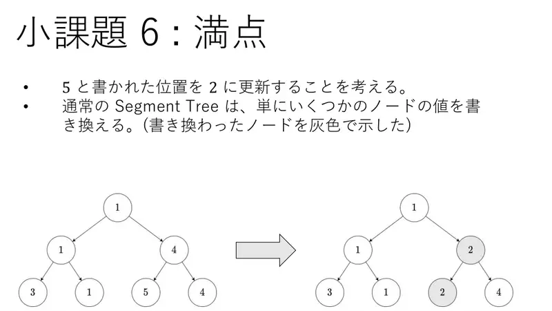
19Ažuriranje pozicije s 5 na 2: obično stablo jednostavno prepiše nekoliko čvorova (sivo na slici). -
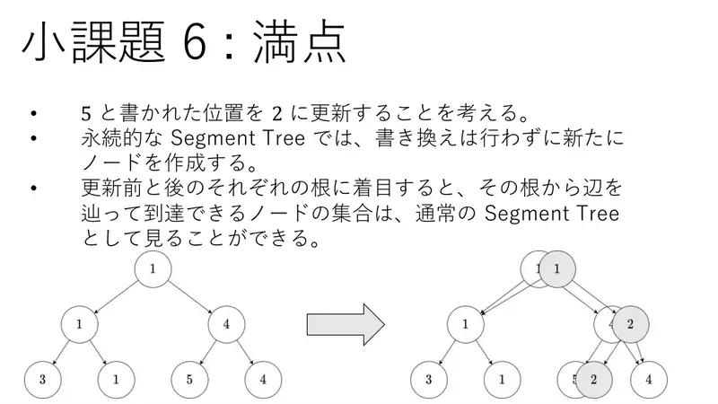
20Perzistentno stablo ne prepisuje — stvara nove čvorove duž puta. Skup čvorova dostupan iz starog korijena i skup dostupan iz novog svaki je za sebe obično segmentno stablo. -
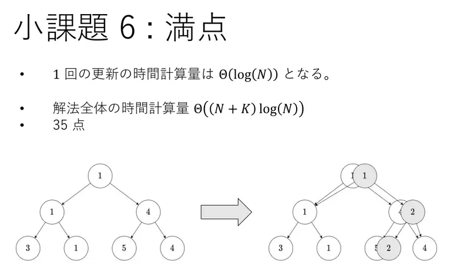
21Jedno ažuriranje: $\Theta(\log N)$ novih čvorova. Ukupno $\Theta((N + K)\log N)$. 35 bodova.
← → tipke ili klik na sliku
Slajd
Raspodjela bodova
izvorni slajd 22
-
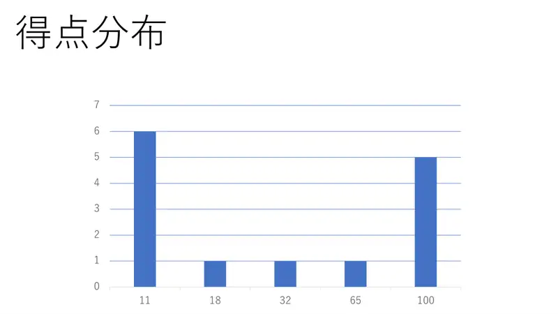
22Raspodjela bodova natjecatelja: 0, 1, 2, 3, 4, 5, 6, 7, 11, 18, 32, 65, 100.
Sažetak
- Sortiraj po $X$, podijeli po $Y$: Manhattan cijena postaje $f(j) - g(i)$; $K = 1$ uz min-segmentno stablo.
- „Sljedeći partner za $j$” = min nakon gašenja prethodnog u verziji stabla iz trenutka $j$ → perzistentno stablo, $O((N+K)\log N)$.
- Alternativa: rotacija za 45° + binarno pretraživanje po cijeni + nabrajanje parova $\le D-1$.